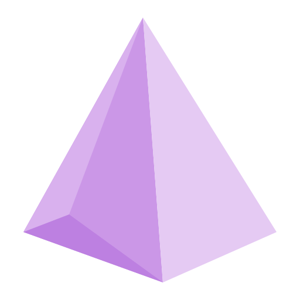
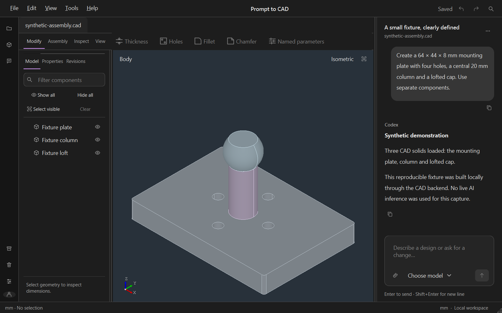

Geometry you can work on
Supported holes, offsets, fillets, chamfers, named parameters and controlled CAD scripts. Split, merge or replace components within the submitted scope.

Prompt to CADOPEN-SOURCE PREVIEW / WINDOWS X64
Describe a part. Inspect the result. Refine it in a native CAD workspace that keeps your projects and revisions close at hand.
Personal project · source code · Windows x64

01 / THE WORKFLOW
Keep the conversation beside the model. Work with actual solids, component selections and accepted revisions.
Give the CAD agent dimensions and constraints. Submit selected geometry or supported reference images when a change needs context.
Orbit the native viewport, measure features, inspect components and check what was created. Imported feature history is never invented.
Use supported direct tools or continue the conversation. Candidate checks precede acceptance; undo and revision restoration stay available.
02 / A PRACTICAL TOOLSET
Supported holes, offsets, fillets, chamfers, named parameters and controlled CAD scripts. Split, merge or replace components within the submitted scope.
Local projects, multiple conversations, component visibility, Save As, accepted revisions and undo/redo keep a design organized.
Component colors, dimensions, labels and notes belong to revisions. Reference images depend on the selected model's reported support.
Import STEP/STP and editable recipes, or GLB, STL, OBJ and PLY meshes. Export supported solid geometry to STEP/STL and visual meshes to GLB/STL.
03 / AN HONEST DEMONSTRATION
A reproducible fixture for exploring the interface—not a claim of general AI reliability.
SYNTHETIC PROMPT
Create a 64 × 44 × 8 mm mounting plate with four holes, a central 20 mm column and a lofted cap. Use separate components.
The demonstrated result Plate, column and cap built by the local CAD backend.
04 / YOUR DATA, CLEARLY LOCATED
Projects, conversations and revisions are stored locally. Account material uses separate Windows-protected storage. None of it belongs in the source repository.
AI features send your request and explicitly submitted context to the configured provider. Offline CAD tools do not need an AI connection. The project website has no trackers, external fonts or backend service.
Read the privacy boundaries05 / MAKE IT YOURS
This is a personally maintained project. Windows x64 is the documented source-build path. Python, C++ tools and a pinned SDK setup are documented; your computer's folder layout is not part of the source.